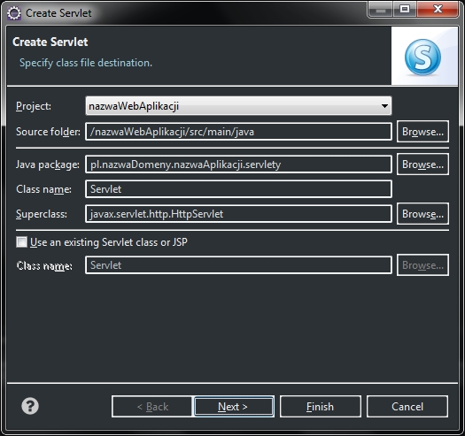
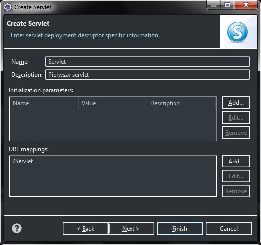

Aby do nowo utworzonego projektu web aplikacji przy pomocy maven'a dodać nowy servlet należy najpierw dodać pakiet src/main/java
klikając ppm na projekcie i wybierając New -> Package.... Wszystkie pliki javy muszą się znajdować w tym
pakiecie aby maven je poprawnie skompilował i umieścił w odpowiedniej lokalizacji:
Nowy servlet do projektu dodajemy klikając ppm na pakiecie src/main/java New -> Servlet
W oknie dodawania nowego servletu należy podać lokalizację folderu źródłowego, nazwę pakietu oraz nazwę klasy. Gdyby Eclipse nie pozwalał utworzyć w tej lokalizacji klasy, bo nie nie jest to ścieżka plików javy to należy dodać tą lokalizację do java build path
W kolejnym oknie należy podać nazwę tworzonego servletu oraz opcjonalnie opis. W rubryce URL mappings można ustawić ścieżkę mapowania do servletu:
Zatwierdzamy wykonaną operację klikając Finish. We wskazanej lokalizacji zostaje utworzony servlet a do
pliku konfiguracyjnego web.xml zostają dodane dwa wpisy. Jeden konfigurujący dodany servlet a drugi konfigurujący mapowanie ustawione podczas
procesu tworzenia servletu. Tak przygotowany projekt można skompilować poleceniem maven clean package oraz uruchomić. Po
wprowadzeniu w przeglądarkę internetową adresu naszej aplikacji oraz ścieżki skonfigurowanej w pliku web.xml zobaczymy: